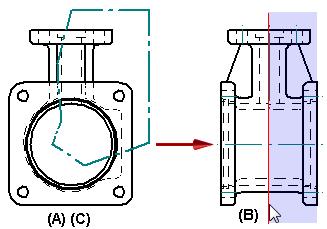
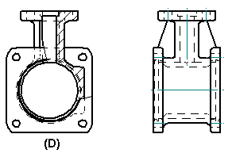
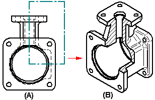

Broken-Out command
Broken-Out command
You can use the Broken-Out command to break away regions of a part view, so that you can display interior features on the model.

Creating a broken-out section view
You create a broken-out section view by drawing a closed profile on a source drawing view (A), defining the depth of the broken-out portion (B), and then specifying the drawing view you want to break away (C). The profile can consist of any 2D elements, such as lines, arcs, and B-spline curves.

When you finish the command, the broken-out portion is displayed and the profile is hidden (D).

You also can specify that the drawing view to be broken out is different than the drawing view on which the profile is drawn. For example, you can draw the profile on a principal view (A), and then specify that a pictorial view is broken out (B). The broken-out section is applied perpendicular to the plane of the source view.

Methods for defining the extent depth
You can define the extent depth of the cut using any of these methods.
-
By typing a value in the Depth box on the command bar.
-
By clicking in free space.
-
By clicking a keypoint or a centerline in a drawing view that is folded 90 degrees from the source view where the profile is drawn.
Note:This method defines an associative extent depth that updates when the model changes.
Modifying the section view profile
You can modify a broken-out section view by modifying the profile or extent depth used to create it. To make the profile accessible, you must first select the Show Broken-Out Section view profiles option on the General tab (Drawing View Properties dialog box).
For more information, see Modify a broken-out section view.
Line style control for boundary edges in broken-out section views
You can control the line style used to display the hatch boundary edges in a broken-out section view using the Annotation page (Drawing View Properties dialog box).
-
Use the Show boundary edges check box to display the hatch boundary as a thin line. When deselected, the Visible edge style setting on the Display page (Drawing View Properties dialog box) controls edge display. Often, this is a thicker line.
-
Use the Boundary edges style list to choose the line style to apply.
This line style control is available for broken-out section views that are created using the same drawing view to draw the profile and to apply the section. You can touch up the hatch boundary edges using the Edge Painter, Show Edges, and Hide Edges commands.
How do I
Create a broken-out section viewModify a broken-out section view
Create a broken view
Break an isometric view with a break axis
Connect a break line at a distance
Display break lines and cropped edges in a broken view
Modify break lines in a broken view
Copy break lines between drawing views
Remove inherited break lines
Learn more
Broken viewsLook up more details
Broken View commandBroken View command bar
Inherit Break Lines command
Remove Break Line Inheritance command